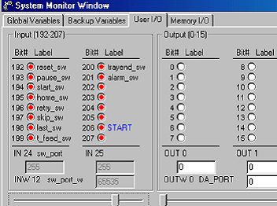

Service History
Subject: Front/Rear Operation Panel of NS-6040 no response
Handler Model: NS-6040 (UTAC, NS60-20T, S/N: 15631, EPSON-Z)
Controller: SRC-520CE, Type 2
Date: 8 Jan 2008
Symptom
After CPU Board upgrade, Power On handler front operation panel, MMI launch.
Reset not light up at front/rear Operation Panel. In SPEL95, I/O monitor for Operation Panel Input are LED on.
Status that was found for Operation panel no response
|
Label |
Front Operation panel |
SPEL95, I/O monitor |
|
RESET |
OFF |
ON |
|
PAUSE |
OFF |
ON |
|
START |
OFF |
ON |
|
HOME |
OFF |
ON |
|
RETRY |
OFF |
ON |
|
SKIP |
OFF |
ON |

Action
Found that CONTEC PC I/O board selector switch SW1 was not at 0, set to 0, ok.
The CONTEC PC I/O board "PIO-32/32L(PCI)" made by CONTEC is used to connect the front and rear operation panel.
|
JP1 |
2-3 Short |
NOT USE |
|
SW1 |
0 |
Default |
Cause
CONTEC PC I/O board selector switch SW1 was not at 0.
Same situation as 0008-NS6K and 0037-NS6K.
Remarks
Recovery CD FD045015 Ver2.1 2004/03/30 PC686BX/Win98
|
Before CPU Upgrade |
After CPU Upgrade |
|
MMI 1.3h |
MMI 2.02a |
|
SPEL 95 2.3a |
SPEL 95 2.53 |
|
Win95 |
Win98 |
|
Win98 Product Key: T7339-MT84B-2Q778-RTQGK-XH9HB |
|
|
PC686-BX S/N: 00804C4B1D79 EG51300756 |
|
This CPU Upgrade has 2 other issues, refer 0010-NS6K and 0011-NS6K.
Normally, in MMI, after press Power On on Front Operation panel, the RESET button will light up and MMI status windows show HALT.
When Front or Rear Operation Panel cannot function, on software side check the following:
1) In SPEL, ensure "Main" set as "Main Function"
2) In SPEL, ensure "startup" set as "Background Function"
3) SPEL set as "A" mode (so call AUTO mode) before switch back to MMI.